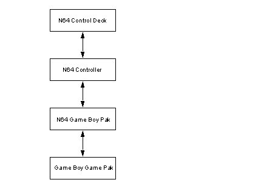
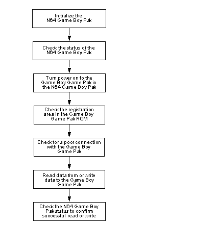
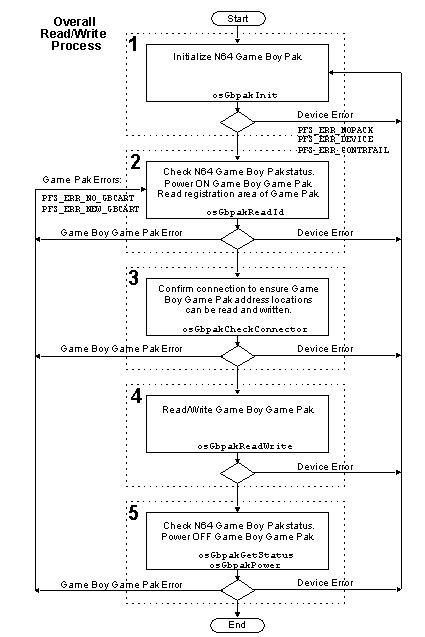
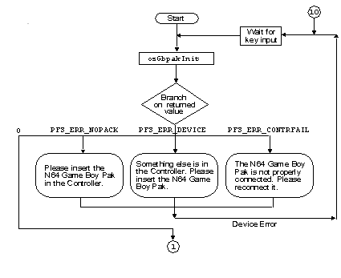
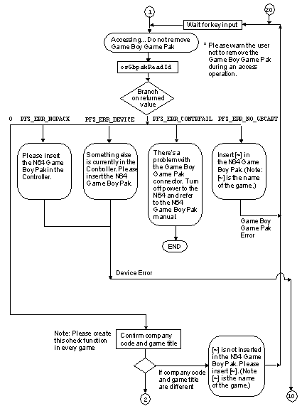
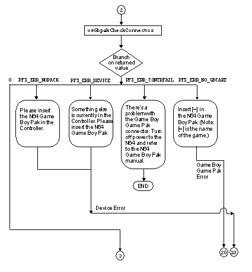
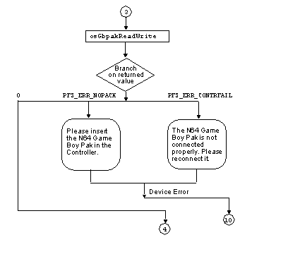
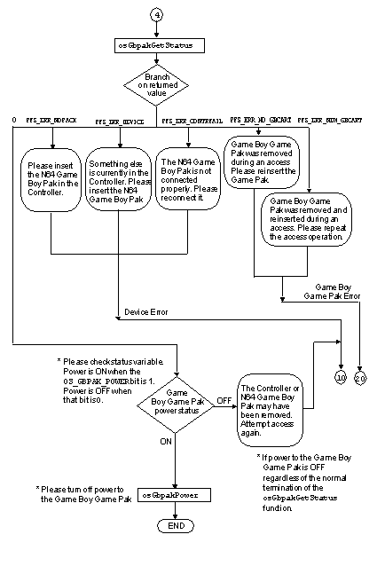
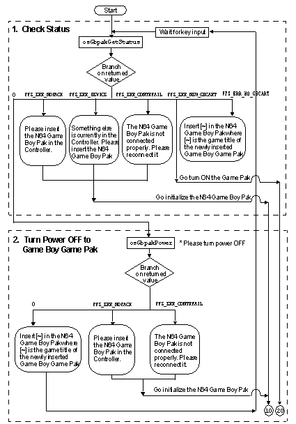

|
|
N64 Game Boy Pak
Description of the N64 Game Boy Pak
Figure 26.7.1 N64 Game Boy Pak
Features of the N64 Game Boy Pak
Programming the N64 Game Boy Pak
Figure 26.7.2 Programming Procedure
Only after these processes end normally should you attempt to read from or write to the Game Boy Game Pak. When you no longer need access to the Game Boy Game Pak, check the status of the N64 Game Boy Pak again to see whether an error occurred during the read/write session.
The following section explains the functions that are performed in each process. A more detailed explanation of these procedures (including error branching) is explained in Section 26.7.5, "Examples Using N64 Game Boy Pak Functions."
N64 Game Boy Pak Function Specifications
There are a total of six N64 Game Boy Pak functions:
These functions include internal operations that wait for a message from the serial interface (SI). Therefore, you can boost efficiency by creating threads for use by these N64 Game Boy Pak processes.
Initialization Function — osGbpakInit
Syntax
The N64 Game Boy Pak is a special N64 peripheral device that enables the N64 to read data from and write data to an ordinary Game Boy Game Pak. To use this device, plug the N64 Game Boy Pak into an N64 Controller that is connected to an N64 Control Deck. Then insert an ordinary Game Boy Game Pak into the N64 Game Boy Pak as illustrated.

The main features of the N64 Game Boy Pak are described below:
This section explains the programming procedure used to gain access to the memory in the Game Boy Game Pak by using the N64 Game Boy Pak. The programming process is illustrated in Figure 26.7.2, and described below.

This section explains the library functions used in the N64 program to handle the N64 Game Boy Pak. Please refer to the "DMG Technical Manual" and the "Game Boy Memory Controller Manual" for details about the Game Boy memory map and register operations.
Initializes the hardware and the structures for controlling the N64 Game Boy Pak.
#include <ultra64.h>
s32 osGbpakInit(OSMesgQueue *siMessageQ, OSPfs *pfs, int channel);
siMessageQ : The initialized message queue connected to OS_EVENT_SI
pfs : Structure for controlling the N64 Game Boy Pak
channel : Controller channel number
Description
osGbpakInit() is the function for initializing the N64 Game Boy Pak. It initializes the pfs structure and the hardware. There is thus no need to initialize the pfs structure on the application side. siMessageQ is the initialized message queue connected to OS_EVENT_SI. Please refer to osSetEventMesg() for information on how to make this connection.
To use the N64 Game Boy Pak, you need to call this function first. If the N64 Game Boy Pak is reinserted, please call the function again. However, in this case you must call osContInit() before calling osGbpakInit() in order to internally initialize the OS.
The osGbpakInit() function performs an internal 0.2 second wait process because it takes a maximum of 0.2 second for the N64 Game Boy Pak to stabilize after the power supply is turned ON. This wait process involves a 0.2s count using the CPU timer (osSetTimer() function). Thus, before calling this function, you need to call the osCreateViManager() function.
If the function terminates normally, a value of 0 is returned. If an error occurs, one of the following error codes is returned:
PFS_ERR_NOPACK
Nothing is inserted in the specified controller.
PFS_ERR_DEVICE
Some device other than the N64 Game Boy Pak is inserted in the controller.
PFS_ERR_CONTRFAIL
Data transfers with the controller have failed. The controller may not be connected correctly, or there may be some problem with the N64 Game Boy Pak or the controller connector.
Detect Status Function — osGbpakGetStatus
Gets status of the N64 Game Boy Pak
Syntax
#include <ultra64.h> s32 osGbpakGetStatus(OSPfs *pfs, u8 *status); pfs : Structure for controlling the N64 Game Boy Pak status : The detected status
Description
The osGbpakGetStatus() function is used to detect the status of the N64 Game Boy Pak. The pfs structure must be initialized first with the osGbpakInit() function. The detected result is returned to "status." The status can be one of the following:
OS_GBPAK_GBCART_ON
This bit indicates that a Game Boy game pak is inserted. It is returned when a Game Boy game pak is inserted in the N64 Game Boy Pak.
OS_GBPAK_GBCART_PULL
This bit indicates that removal of a Game Boy game pak has been detected. It is returned once the Game Boy game pak has been removed. When there is a Game Boy game pak in the N64 Game Boy Pak and the osGbpakGetStatus() or osGbpakReadId() function is called, this bit becomes 0.
OS_GBPAK_POWER
This bit indicates the state of power supply to the Game Boy game pak. When this bit is 1, power is ON; when this bit is 0, power is OFF. Note that this only checks for power on the software side, and does not confirm that the hardware has a stable power supply. The status of the latter cannot be checked on the software side. For details, please refer to osGbpakPower().
OS_GBPAK_RSTB_DETECTION
This bit indicates that the Reset signal has been detected. When the Game Boy game pak is reset, this bit becomes 1. If either the osGbpakGetStatus() or the osGbpakReadId () function is called when a Game Boy game pak is inserted, this bit returns to 0. Because this bit becomes 1 when the power is turned on, you need to clear it back to 0 after the power is turned on by calling the osGbpakGetStatus() or the osGbpakReadId () function so the bit status can be used to detect a Reset signal.
If the function terminates normally, a value of 0 is returned. If an error occurs, one of the following error codes is returned:
PFS_ERR_NOPACK
Nothing is inserted in the specified controller.
PFS_ERR_DEVICE
A device other than the N64 Game Boy Pak is inserted in the controller.
PFS_ERR_CONTRFAIL
Data transfers with the controller have failed. The controller may not be connected correctly, or there may be some problem with the N64 Game Boy Pak or the controller connector.
PFS_ERR_NO_GBCART
No Game Boy game pak is inserted in the N64 Game Boy Pak.
PFS_ERR_NEW_GBCART
A Game Boy game pak has been inserted and removed.
If you remove and reinsert a Game Boy game pak and then reset N64, the flag for insertion and removal of the Game Boy game pak will remain up. Therefore you need to be careful, because a PFS_ERR_NEW_GBCART error will be returned if osGbpakInit() and then osGbpakGetStatus() are executed after resetting N64. The generation of such an error can be avoided by using osGbpakReadId() to check the status of the N64 Game Boy Pak after initialization.
Game Boy Game Pak Power ON/OFF — osGbpakPower
Turns power ON/OFF to the Game Boy game pak inserted in the N64 Game Boy Pak.
Syntax
#include <ultra64.h> s32 osGbpakPower (OSPfs *pfs, s32 flag); pfs : Structure for controlling the N64 Game Boy Pak flag : Specifies power ON/OFF OS_GBPAK_POWER_ON (Power ON) OS_GBPAK_POWER_OFF (Power OFF)
Description
The osGbpakPower() function controls the supply of power to the Game Boy game pak. Power is turned ON or OFF according to the value specified by the flag. If power is turned from OFF to ON, the function performs an internal process for more than 0.12 second to wait for the power supply to stabilize. Since this process uses the CPU timer (osSetTimer() function), you need to call the osCreateViManager() function before calling this function.
Also, please use the osGbpakInit() function to initialize the pfs structure in advance.
If the Game Boy game pak is not accessed for an extended period of time, use the osGbpakPower() function to turn the power OFF. Then turn the power back ON the next time it is accessed.
If the function terminates normally, a value of 0 is returned. If an error occurs, one of the following error codes is returned:
PFS_ERR_NOPACK
Nothing is inserted in the specified controller.
PFS_ERR_CONTRFAIL
Data transfers with the controller have failed. The controller may not be connected correctly, or there may be some problem with the N64 Game Boy Pak or the controller connector.
Reading the Game Boy Game Pak ROM Registration Area — osGbpakReadId
Checks the registration area in the Game Boy game pak ROM
Syntax
#include <ultra64.h>
s32 osGbpakReadId (OSPfs *pfs, OSGame BoypakId *id, u8 *status);
pfs : Structure for controlling the N64 Game Boy Pak
id : Pointer to the registration data structure in the Game Boy game pak ROM
status : The detected status
typedef struct {
u16 fixed1; Fixed data (0x00,0xc3)
u16 start_address; Program start address
u8 nintendo_chr[0x30]; "Nintendo" character data
u8 game_title[16]; Game title
u16 company_code; Company code
u8 body_code; Body code
u8 cart_type; Game pak type
u8 rom_size; ROM size
u8 ram_size; RAM size
u8 country_code; Country code
u8 fixed_data; Fixed data (0x33)
u8 version; Mask ROM version number
u8 isum; Complement check
u16 sum; Sum check
} OSGame BoypakId; : Registration data structure in
the Game Boy game pak ROM
Note: Please refer to the "Game Boy Master ROM Submission Procedure" document for details about these variables.
Description
The osGbpakReadId () function reads the data in the registration area (0x100 ~ 0x14f) of the Game Boy game pak ROM and checks the data to confirm that the Game Boy game pak can be accessed correctly.
The following three processes are performed internally:
Note that this function does not check the game pak itself. Please do this from the application side. Specifically, please check the game title and the company code. Since the game cannot be specified with the game title alone, please make sure to check the company code as well. However, some of the first game paks released for the Game Boy may not contain the company code. Please inquire with us about ways to check game paks that do not carry the company code.
Call this function after initializing the N64 Game Boy Pak and before reading and writing data. Since this function checks the status like osGbpakGetStatus() and turns the power ON like osGbpakPower(), neither one of these two other functions needs to be called.
If the function terminates normally, a value of 0 is returned. If an error occurs, one of the following error codes is returned:
PFS_ERR_NOPACK
Nothing is inserted in the specified controller.
PFS_ERR_DEVICE
A device other than the N64 Game Boy Pak is inserted in the controller.
PFS_ERR_CONTRFAIL
Data transfers with the controller have failed. The controller may not be connected correctly, or there may be some problem with the N64 Game Boy Pak or the controller connector.
PFS_ERR_NO_GBCART
No Game Boy game pak is inserted in the N64 Game Boy Pak.
Detecting Poor Contact by Connector— osGbpakCheckConnector
Detects poor contact by the Game Boy game pak connector.
Syntax
#include <ultra64.h> s32 osGbpakCheckConnector(OSPfs *pfs, u8 *status);
Description
The osGbpakCheckConnector() function confirms that the N64 Game Boy Pak and the Game Boy game pak are firmly connected together. It verifies the operation of every address line by accessing specific areas of ROM and RAM (when there is RAM).
If you call osGbpakReadWrite() without first calling this function, data could be read or written to the wrong address because of a poor connection. Therefore, please make sure to call the osGbpakCheckConnector() function before calling the osGbpakReadWrite() function.
If the function terminates normally, a value of 0 is returned. If an error occurs, one of the following error codes is returned:
PFS_ERR_NOPACK
Nothing is inserted in the specified controller.
PFS_ERR_DEVICE
A device other than the N64 Game Boy Pak is inserted in the controller.
PFS_ERR_CONTRFAIL
Data transfers with the controller have failed. The controller may not be connected correctly, or there may be some problem with the N64 Game Boy Pak or the controller connector.
PFS_ERR_NO_GBCART
No Game Boy game pak is inserted in the N64 Game Boy Pak.
Note that the osGbpakCheckConnector() function only supports Game Boy game paks using MBC1,3,5 or no memory controller at all. If the Game Boy game pak uses some other memory controller, please refer to the procedure described below and create a check program on the application side.
The paragraphs below explain the processes which are carried out by osGbpakCheckConnector() function. More specifically, they describe how the ROM area data and the RAM area data are used to verify operation of the address lines.
ROM area check
From ROM addresses [0x0000,0x0080,0x0100,0x0200,0x0400,0x0800,0x1000,0x2000,0x4000 ] read the first 32 bytes of data, and compare this with the next adjacent 32 bytes of data. Next, compare the data in address 0x0000 with the data at all the addresses in 32-byte units. If this check does not yield any 32-byte data units that are the same, then proceed to the RAM area check described below. If a 32-byte unit is found to be exactly the same, then shift 32 bytes from the address of both data sets and compare again. If the data is still the same after repeating this process four times, then generate an error that there is some problem with the address lines, and terminate.
The addresses used here are used once for each address line from bit 7 to bit 14. Thus, if the data is exactly the same, then chances are high there is a disparity in the address lines. As for the address lines for bit 6 and below, they have already been confirmed from reading the registration area in ROM. The address line for bit 15 is verified in procedure (2) below.
RAM area check
Next, compare 32 bytes of data from ROM area address 0x2000 with 32 bytes of data from RAM area address 0xa000. If the compared blocks of data are different, terminate normally. If the data is still the same after shifting 32 bytes and comparing again up to four times, then generate an error that there is some problem
with the address lines, and terminate.
Bit 15 could be verified with address 0x8000, but this part cannot be accessed with the indicated RAM area, so address 0xa000 is used.
Reading and Writing to Game Boy Game Pak Memory — osGbpakReadWrite
Read/write process to the Game Boy game pak memory
Syntax
#include <ultra64.h> s32 osGbpakReadWrite (OSPfs *pfs, u16 flag, u16 address, u8 *buffer, u16 size); pfs : Structure for controlling the N64 Game Boy Pak flag : OS_READ (read time), OS_WRITE (write time) address : Game Boy game pak CPU address buffer : Pointer to buffer in RDRAM size : Read/write byte size
Description
The osGbpakReadWrite () function accesses the Game Boy game pak memory via the N64 Game Boy Pak. It can be used to access the game pak memory when a Game Boy game pak is inserted in the N64 Game Boy Pak. The pfs structure must be initialized first with the osGbpakInit() function.
Specify in "flag" either OS_READ or OS_WRITE. When OS_READ is specified, data is read from the Game Boy game pak, while OS_WRITE specifies writing data to the Game Boy game pak. Specify in "address" the value of the Game Boy game pak's CPU address (0x0000 ~ 0xbfff). Briefly put, by specifying the same address accessed by the Game Boy CPU, it becomes possible to access the ROM and RAM in the Game Boy game pak. However, the values in "address" and "size" must be multiples of 32.
Caution is required when dealing with the returned values. This function cannot determine whether the Game Boy game pak has been pulled out, or whether Game Boy game paks have been exchanged. That is to say, a "0" (normal termination) is returned even if the Game Boy game pak has been removed during function operations. Thus, please confirm the status before and after calling this function to make sure the Game Boy game pak has not been removed.
Furthermore, please note that this function terminates normally without returning an error even when it is executed while the power is OFF to the Game Boy game pak. Thus, you may think you have written data to the game pak when in fact nothing has been done.
If the function terminates normally, a value of 0 is returned. If an error occurs, one of the following error codes is returned:
PFS_ERR_NOPACK
Nothing is inserted in the specified controller.
PFS_ERR_CONTRFAIL
Data transfers with the controller have failed. The controller may not be connected correctly, or there may be some problem with the N64 Game Boy Pak or the controller connector.
Examples Using N64 Game Boy Pak Functions
Below we provide two examples that show concrete ways to the use the various N64 Game Boy Pak functions. One concerns reading and writing data to the Game Boy game pak, while the other deals with the exchange of a game pak.
In order to facilitate an understanding of the overall process of each function, the functions in these examples include processes that branch on the evaluation of errors. In a real program, it would be more efficient to create a separate error evaluation function, and transfer to this function whenever an error arises in any of the other functions.
Also, the messages used here are strictly examples, so with the exception of one set message, please use messages as you see fit on the application side. Please see item #12, "Special error messages," for an explanation about the one set message that must be displayed as specified.
For further details, please also refer to the sample programs in the /usr/src/PR/demos/Game Boypak/ directory.
Reading and Writing Data to the Game Boy Game Pak
Figure 26.7.3 provides a flow chart for the procedure described below. The following steps are performed:
Figure 26.7.3 Reading and Writing Data to the Game Boy Game Pak
|  |
Each of these five processes is described in detail below.
If the N64 Game Boy Pak needs to be reinserted because of an error, please set it up so the procedure can be restarted by pressing a key. Note that an error message may arise due to a poor connection if the Restart button is pressed at the same time that the N64 Game Boy Pak is inserted in the controller.
The first process performed by the osGbpakReadId() function is to read and check the status of the N64 Game Boy Pak. If this process terminates normally, then power is turned on to the Game Boy game pak. After that, the registration area in the Game Boy game pak ROM is read in order to verify that the memory can be accessed correctly. Specifically, the "Nintendo" character data area and the complement check are verified.
On the program side, if a device error occurs, jump the process back to step (1), and if a Game Boy game pak error occurs, display a message and repeat step (2). In the case of a PFS_ERR_CONTRFAIL device error, please make sure to display the following message:
"There is a problem with the Game Boy game pak connector. Turn off power to the N64 console and refer to the N64 Game Boy Pak instruction manual."
The two possible Game Boy game pak errors are PFS_ERR_NO_GBCART (a Game Boy game pak is not inserted) and PFS_ERR_NEW_GBCART (the Game Boy game pak was removed at least once after initialization). If the Game Boy game pak needs to be reinserted, please set it up so the procedure can be restarted by pressing a key.
Next, read and check the registration area data, and make a separate check to verify that the correct Game Boy game pak is inserted. Specifically, check the game title and the company code. The osGbpakReadId() function does not do this, so please check from the application side.
Please make sure to execute this function before accessing the Game Boy game pak with the osGbpakReadWrite() function.
On the program side, if a device error occurs, jump the process back to step (1), and if a Game Boy game pak error occurs, display a message and execute step (2). In the case of a PFS_ERR_CONTRFAIL device error, please make sure to display the following message:
"There is a problem with the Game Boy game pak connector. Turn off power to the N64 console and refer to the N64 Game Boy Pak instruction manual."
Note: As discussed previously, the osGbpakCheckConnector() function only supports Game Boy game paks using MBC1,3,5 or no memory controller at all. If the Game Boy game pak uses some other memory controller, please refer to the procedure described below and create a check program on the application side.
The paragraphs below explain the processes carried out by the osGbpakCheckConnector() function. Specifically, they describe how the ROM area data and the RAM area data are used to verify operation of the address lines.
The addresses used here are used once for each address line from bit 7 to bit 14. Thus, if the data is exactly the same, then chances are high there is a disparity in the address lines. As for the address lines for bit 6 and below, they have already been confirmed from reading the registration area in ROM. The address line for bit 15 is verified in procedure (ii) below.
Bit 15 could be verified with address 0x8000, but this part cannot be accessed with the indicated RAM area, so address 0xa000 is used.
Please be careful, because if by chance during the RAM area check procedure (ii) the 128 bytes from ROM address 0x2000 contain the initial data from RAM, or if during game play the ROM contents are exactly the same, then an error will arise and the system will not advance. In this situation, do not use the osGame BoypakCheckConnector() function, but instead create a function on the application side to check the address line for bit 15. For example, check the data in ROM address 0x3000 with the data in RAM address 0xb000. If the same problem arises during the ROM area check procedure (i), please create a separate function that can check the address lines for bits 7 to 14.
If this function terminates normally, check the status variable and verify the state of the power supply to the Game Boy game pak. If power has been turned OFF to the Game Boy game pak even though the function has terminated normally, then chances are either the controller or the N64 Game Boy Pak was disconnected during the procedure. In this case, repeat from step (1).
Beyond this point, if no access is made to the Game Boy game pak for a long period of time, please use the osGbpakPower() function to turn power OFF to the Game Boy game pak.
Figures 26.7.4 through 26.7.8 show the flow of steps 1 through 5 in greater detail.
Figure 26.7.4 Initialization of the N64 Game Boy Pak
|  |
Figure 26.7.5 Check the Status of the Game Boy Pak, Turn Power ON to Game Boy Game Pak, Access Registration Area in ROM
|  |
Figure 26.7.6 Determine Whether Game Boy Pak is Making Poor Contact
|  |
Figure 26.7.7 Access Game Boy Pak Memory
|  |
Figure 26.7.8 Check Status of N64 Game Boy Pak
|  |
Switching a Game Boy Game Pak
Figure 26.7.9 shows the flow for the process when a different Game Boy game pak is inserted. The following steps are performed:
Figure 26.7.9 Switching a Game Boy Game Pak
|  |
Each of these two processes is described in detail below.
The osGbpakGetStatus () function is used to perform the following processes:
After normal termination, repeat step A again to check the status. If the new Game Boy game pak is inserted correctly, then a PFS_ERR_NEW_GBCART error will be generated, and you should transfer to step (2) above, to turn the power ON to the Game Boy game pak. If no game pak is inserted, then a PFS_ERR_NO_GBCART error will be generated, so display a message asking the user to insert a Game Boy game pak and repeat the previous step. If the user does nothing and the old game pak is left inserted, repeat step B.
Following are precautions for programs that do not wait for key input, but rather auto-detect reinsertion of the N64 Game Boy Pak or the Game Boy game pak and then promptly move on to the next process step.
In confirming insertion of the N64 Game Boy Pak, please use the osContStartQuery() and osContGetQuery() functions to check the status of the controller before executing the osGbpakInit() function. More specifically, confirm a value of 1 for both the OSContStatus structure member variable "status" obtained with the osContGetQuery() function, and for the CONT_CARD_ON OR bit. After you have confirmed that the N64 Game Boy Pak is inserted, then you can execute the osGbpakInit() function to perform initialization.
In confirming insertion of the Game Boy game pak, please always use the osGame BoypakGetStatus() function to check the status of the N64 Game Boy Pak. Then, after confirming insertion of the Game Boy game pak, please wait for at least 10 frames before executing the osGbpakReadId() function. If you do not wait, but instead proceed immediately to the next process, this can cause a connection error to be generated if the connection is not yet stable.
However, we do not recommend using either of these methods, since there is a higher chance of generating errors if you do not have the program wait for key input.
A. Controller
If the controller is detached, power will be suddenly cut to the N64 Game Boy Pak. In this case, start again from the initialization step just like when the N64 Game Boy Pak has been removed.
B. N64 Game Boy Pak
If the N64 Game Boy Pak has been inserted and then removed, start again from the initialization step, as described in Section 26.7.4.1, "Initialization Function."
C. Game Boy Game Pak
Please display a message telling the user not to remove the Game Boy game pak while it is being accessed. Data transfers continue to the end even if the Game Boy game pak has been removed right in the middle of a read/write, without realizing that the game pak has been removed. Thus, in order to detect a chance removal of the Game Boy game pak, please perform a N64 Game Boy Pak status check immediately before and after the data transfer.
Thus, when 1 byte of data is written in the Game Boy register, please transfer data in a way such that the important data is contained in the final 1 byte of the 32-byte unit. In the preceding 31 bytes, write some value other than the value for writing data to the register which cancels write protection to RAM (for an MBC1 type this value is 0x0a).
"There is a problem with the Game Boy game pak connector. Turn off power to the N64 console and refer to the 64Game Boy instruction manual."
The reason for this is because this message with this exact wording is included in the N64 Game Boy Pak instruction manual.
The Game Boy game pak is designed to receive a voltage of 5 volts from the Vcc (power terminal) and send data from the signal line (High signal or Low signal) to ROM or RAM. Usually, if the terminal connection is poor, both the Vcc and the signal line voltage become nearly zero, access to ROM or expanded RAM fails, and an error is detected by either the osGbpakReadId() function or the osGbpakCheckConnector() function.
However, on rare occasions, only the Vcc bus connection is poor, and voltage is supplied to the Vcc when a High signal comes from the signal line at startup. When this occurs, no error is detected by the osGbpakReadId() or osGbpakCheckConnector() functions. If ROM or RAM is accessed in this state, the voltage will drop during access, and once it falls below a certain standard, a Reset signal will be generated. Since the registers are cleared when the Reset occurs, the data transfer will fail.
Since check functions like osGbpakReadId() and osGbpakCheckConnector() can pass normally even when the Vcc terminal is poorly connected, please execute the following procedures to detect this situation:
However, an appropriate value may be returned from RAM even when the connector is poorly connected. If this returned value differs when compared to the data in ROM, then it is falsely assumed that the connector is attached properly.
You can perform a more reliable check by writing data to RAM and then reading that data for the comparison check. To do this, prepare a 32-byte free area in RAM with a 32 byte-aligned start address. Write data to this area, and then read the data and compare the two to check whether the data was written correctly.
The above procedure improves the reliability of accessing expanded RAM. However, if this method cannot be used, for example because the free area cannot be reserved in RAM, it is not compulsory. This procedure is recommended to improve reliability, but the minimum requirement is the check with the osGbpakCheckConnector() function. Any additional check is left to the discretion of the creator of the application.
Consider you are running the Game Boy game emulator on N64. You insert a Game Boy game pak into the N64 Game Boy Pak, load the data from expanded RAM into N64, and begin to play. If you were to insert a different Game Boy game pak during execution of the game, then the data from that game would be saved to expanded RAM in the new game pak. It is thus easy to create a duplicate of the data. This can be prevented by detecting whether the game pak has been removed, but the mechanism for detecting the insertion and removal of game paks can easily become inoperable if the N64 Game Boy Pak is handled the wrong way.
Thus, sometimes wrongful copying of data cannot be prevented by simply checking for the insertion and removal of Game Boy game paks. Instead, the following method can be used: prepare a 32-byte free area with a 32 byte-aligned start address in RAM, as explained in item (14), but this time write random data to the area. Then, when saving data to expanded RAM during a game, read this random data to check whether the game pak has been exchanged.
As mentioned in item (14), we recommend this method, but it is up to the creator of the application to decide whether to perform the check.
|
Copyright © 1999 Nintendo of America Inc. All Rights Reserved Nintendo and N64 are registered trademarks of Nintendo Last Updated January, 1999 |